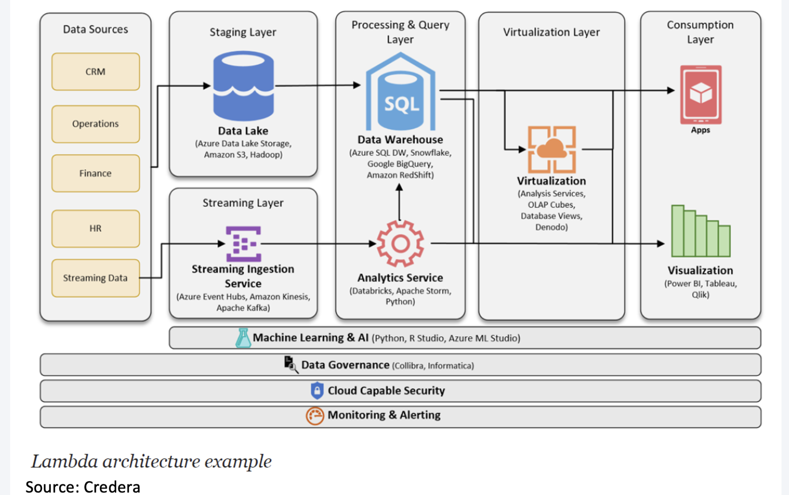
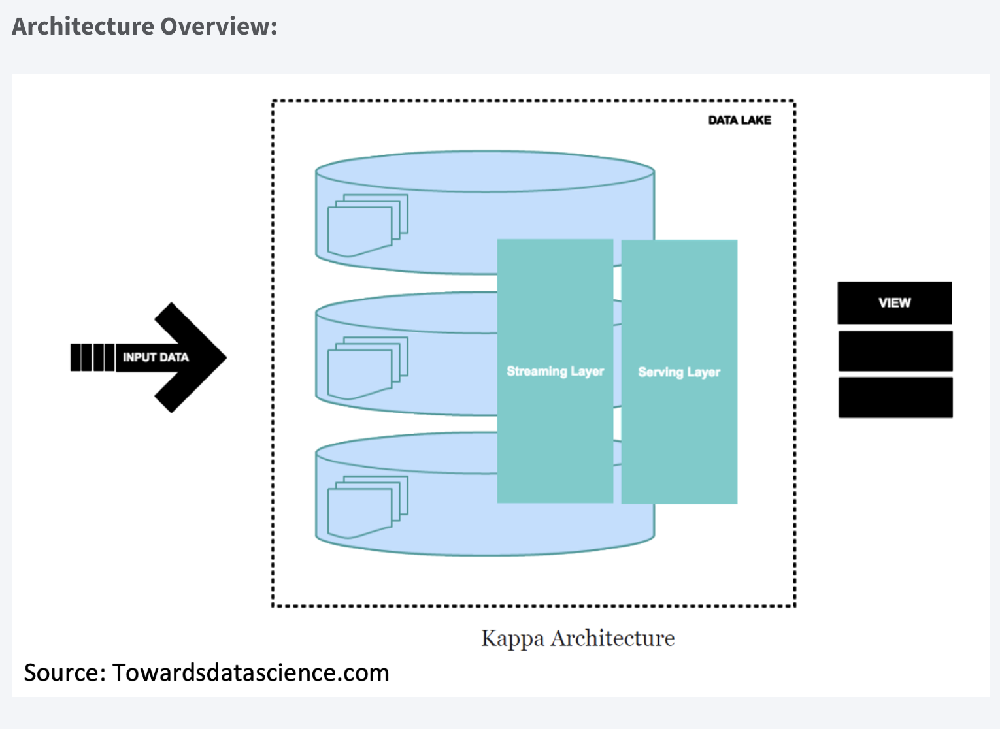
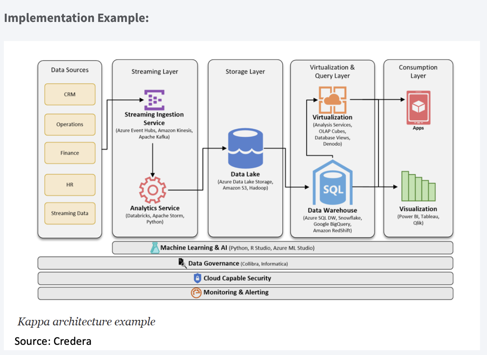
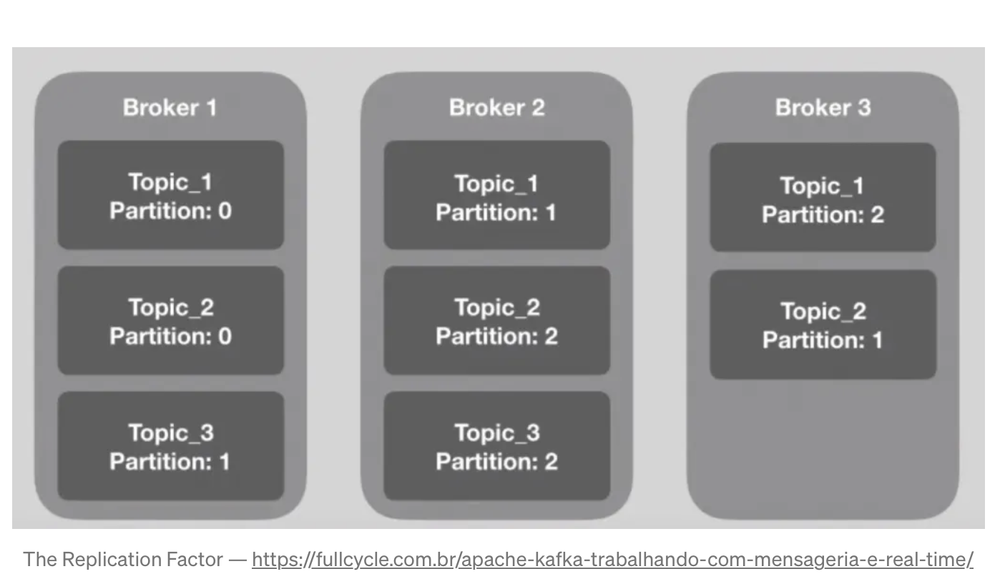

Architektury strumieniowania danych
Architektura przesyłania strumieniowego to określony zestaw technologii, które współpracują ze sobą w celu obsługi przetwarzania strumieniowego, co jest praktyką podejmowania działań na serii danych w momencie ich tworzenia. W wielu nowoczesnych wdrożeniach Apache Kafka działa jako magazyn danych przesyłanych strumieniowo, a następnie wiele procesorów strumieniowych może działać na danych przechowywanych w Kafce w celu wygenerowania wielu danych wyjściowych. Niektóre architektury przesyłania strumieniowego obejmują przepływy pracy zarówno do przetwarzania strumieniowego, jak i przetwarzania wsadowego, które obejmują inne technologie do obsługi przetwarzania wsadowego na dużą skalę lub wykorzystują Kafkę jako magazyn centralny, jak określono w architekturze Kappa.
Doskonała architektura przetwarzania danych w czasie rzeczywistym musi być odporna na błędy i skalowalna; musi obsługiwać aktualizacje wsadowe i przyrostowe oraz być rozszerzalna.
Na początku badamy dwie podstawowe architektury przetwarzania danych, Lambda i Kappa, które stanowią podstawę różnych aplikacji korporacyjnych.
Architektura lambda
Architektura Lambda obejmuje warstwę wsadową (batch layer), warstwę strumieniowa (stream layer) i warstwę serwowania.
Warstwa wsadowa działa na pełnych danych, dzięki czemu system może generować najdokładniejsze wyniki. Jednak wyniki są okupione dużymi opóźnieniami wynikającymi z długiego czasu obliczeń. Warstwa wsadowa przechowuje surowe dane w miarę ich nadejścia i oblicza widoki wsadowe do wykorzystania. Naturalnie procesy wsadowe będą występować w pewnych odstępach czasu i będą długotrwałe. Zakres danych wynosi od godzin do kilku lat.
Warstwa strumieniowa:
- generuje wyniki z małymi opóźnieniami i w czasie zbliżonym do rzeczywistego.
- oblicza widoki w czasie rzeczywistym w celu uzupełnienia widoków wsadowych.
- odbiera napływające dane i aktualizuje wyniki warstwy wsadowej. Koszt obliczeń jest znacznie obniżony dzięki algorytmom przyrostowym zaimplementowanym w warstwie szybkości.
Widoki wsadowe mogą być przetwarzane przy użyciu bardziej złożonych lub kosztownych reguł i mogą mieć lepszą jakość danych i mniej przekrzywień, podczas gdy widoki w czasie rzeczywistym zapewniają bieżący dostęp do najnowszych możliwych danych.
Wreszcie warstwa serwująca umożliwia różne zapytania o wyniki przesłane z warstw wsadowych i szybkich. Dane wyjściowe z warstwy wsadowej w postaci widoków wsadowych i warstwy szybkości w postaci opinii w czasie zbliżonym do rzeczywistego są przekazywane do warstwy obsługującej, która wykorzystuje te dane do obsługi oczekujących zapytań na zasadzie ad-hoc.
 Implementacja:
Implementacja:

Dobre bo:
- Dobra równowaga między szybkością, niezawodnością i skalowalnością.
- Dostęp do wyników zarówno w czasie rzeczywistym, jak i offline, bardzo dobrze pokrywa wiele scenariuszy analizy danych.
- Dostęp do pełnego zestawu danych w oknie wsadowym może przynieść określone optymalizacje, które sprawią, że Lambda będzie wydajniejsza i jeszcze prostsza do wdrożenia.
Kiepskie gdy:
- Wewnętrzna logika przetwarzania jest taka sama (warstwy wsadowe i warstwy czasu rzeczywistego) - wiele zduplikowanych modułów i kodowania.
- Zbiór danych modelowany za pomocą architektury Lambda jest trudny do migracji i reorganizacji.
Architektura kappa
Architektura Kappa to architektura oprogramowania używana do przetwarzania danych przesyłanych strumieniowo. Głównym założeniem Architektury Kappa jest możliwość wykonywania przetwarzania w czasie rzeczywistym i przetwarzania wsadowego, zwłaszcza w celach analitycznych, za pomocą jednego stosu technologicznego. Opiera się na architekturze przesyłania strumieniowego, w której przychodzące serie danych są najpierw przechowywane w silniku przesyłania wiadomości, takim jak Apache Kafka. Stamtąd silnik przetwarzania strumienia odczyta dane, przekształci je w format nadający się do analizy, a następnie zapisze je w analitycznej bazie danych, aby użytkownicy końcowi mogli wyszukiwać.
Architektura Kappa obsługuje analizy (prawie) w czasie rzeczywistym, gdy dane są odczytywane i przekształcane natychmiast po umieszczeniu ich w silniku przesyłania komunikatów. Dzięki temu najnowsze dane są szybko dostępne dla zapytań użytkowników końcowych. Obsługuje również analizę historyczną, odczytując zapisane dane przesyłane strumieniowo z mechanizmu przesyłania wiadomości później w sposób wsadowy, aby utworzyć dodatkowe możliwe do analizy dane wyjściowe dla większej liczby typów analiz.
Architektura Kappa jest prostszą alternatywą dla architektury Lambda, ponieważ wykorzystuje ten sam stos technologii do obsługi strumienia w czasie rzeczywistym i historycznego przetwarzania wsadowego. Obie architektury obejmują przechowywanie danych historycznych w celu umożliwienia analiz na dużą skalę. Obie architektury są również pomocne w rozwiązywaniu problemów związanych z „tolerancją błędów ludzkich”, w których problemy z kodem przetwarzania (błędy lub znane ograniczenia) można przezwyciężyć, aktualizując kod i ponownie uruchamiając go na danych historycznych. Główna różnica w stosunku do architektury Kappa polega na tym, że wszystkie dane są traktowane jako strumień, więc silnik przetwarzania strumienia działa jako jedyny silnik transformacji danych.

Implementation Example:

Plusy
- Aplikacje mogą odczytywać i zapisywać bezpośrednio do Kafki zgodnie z rozwojem. W przypadku istniejących źródeł zdarzeń detektory są teraz przyzwyczajone do przesyłania strumieniowego raportów z dzienników bazy danych, co eliminuje konieczność przetwarzania wsadowego podczas ruchu przychodzącego, co skutkuje mniejszą liczbą zasobów.
- Zapytania muszą uwzględniać tylko jedną lokalizację serwowania, zamiast sprawdzać widoki partii i szybkości.
Trudności
- niełatwe do wdrożenia, zwłaszcza w przypadku odtwarzania danych.
Jak wypada porównanie Lambda i Kappa?
Obie architektury obsługują analizy w czasie rzeczywistym i historyczne w jednym środowisku. Jednak istotną zaletą architektury Kappa w porównaniu z architekturą Lambda jest to, że umożliwia ona zbudowanie systemu przesyłania strumieniowego i przetwarzania wsadowego na jednej technologii. Oznacza to, że możesz zbudować aplikację przetwarzającą strumienie do obsługi danych w czasie rzeczywistym, a jeśli musisz zmodyfikować dane wyjściowe, zaktualizuj swój kod, a następnie ponownie uruchom go na danych w mechanizmie przesyłania komunikatów w sposób wsadowy. Jak sugeruje architektura Lambda, nie ma osobnej technologii do obsługi przetwarzania wsadowego.
Przy wystarczająco szybkim silniku przetwarzania strumieniowego możesz nie potrzebować innej technologii zoptymalizowanej pod kątem przetwarzania wsadowego. Odczytujesz równolegle przechowywane dane przesyłane strumieniowo (zakładając, że dane w Kafce są odpowiednio podzielone na osobne kanały lub „partycje”) i przekształcasz dane tak, jakby pochodziły ze źródła strumieniowego. W przypadku niektórych środowisk możliwe do przeanalizowania dane wyjściowe można utworzyć na żądanie. Gdy nowe zapytanie zostanie przesłane przez użytkownika końcowego, dane mogą zostać przekształcone ad hoc, aby uzyskać optymalną odpowiedź na to zapytanie. Ponownie wymaga to szybkiego silnika przetwarzania strumieniowego, aby zapewnić małe opóźnienia.
Chociaż architektura Lambda nie określa technologii, których należy użyć, komponent przetwarzania wsadowego jest często wykonywany na platformie big data z wykorzystaniem Apache Hadoop. Rozproszony system plików Hadoop (HDFS) umożliwia ekonomiczne przechowywanie „surowych danych”, które można przekształcić za pomocą narzędzi Hadoop w format umożliwiający analizę. Podczas gdy Hadoop jest używany w komponencie systemu do przetwarzania wsadowego, oddzielny silnik przeznaczony do przetwarzania strumieniowego jest używany w komponencie analitycznym w czasie rzeczywistym. Jednak jedną z zalet architektury Lambda jest to, że znacznie większe zestawy danych (w zakresie petabajtów) można przechowywać i przetwarzać wydajniej w Hadoop w celu analizy historycznej na dużą skalę.
Publikuj/Subskrybuj
System przesyłania wiadomości „Publikuj/Subskrybuj” ma kluczowe znaczenie dla aplikacji opartych na danych. Komunikaty Pub/Sub to wzorzec charakteryzujący się tym, że nadawca (publikujący) fragmentu danych (wiadomości) nie kieruje go wprost do odbiorcy. pub/sub to systemy, które często posiadają brokera czyli centralny punkt, w którym znajdują się wiadomości.
Apache Kafka
Na witrynie Kafki znajdziesz definicję:
Rozproszona platforma streamingowa
Co to jest „platforma rozproszonego przesyłania strumieniowego”?
Najpierw chcę przypomnieć, czym jest „strumień”. Strumienie to po prostu nieograniczone dane, dane, które nigdy się nie kończą. Ciągle ich przybywa i możesz przetwarzać je w czasie rzeczywistym.
A „rozproszone”? Rozproszony oznacza, że Kafka działa w klastrze, a każdy węzeł w grupie nazywa się Brokerem. Ci brokerzy to po prostu serwery wykonujące kopię Apache Kafka.
Tak więc Kafka to zestaw współpracujących ze sobą maszyn, aby móc obsługiwać i przetwarzać nieograniczone dane w czasie rzeczywistym.
Jego rozproszona architektura jest jednym z powodów, dla których Kafka stał się tak sławny. Brokerzy sprawiają, że jest odporny, niezawodny, skalowalny i odporny na błędy. Ale dlaczego panuje błędne przekonanie, że Kafka to kolejny „kolejkowy system przesyłania wiadomości”?
Aby odpowiedzieć na tę odpowiedź, musimy najpierw wyjaśnić, jak działa kolejkowe przesyłanie wiadomości.
Kolejkowy system przesyłania wiadomości
Przesyłanie wiadomości, to po prostu czynność wysyłania wiadomości z jednego miejsca do drugiego. Ma trzech głównych “aktorów”:
- Producent: Który tworzy i wysyła komunikaty do jednej lub więcej kolejek;
- Kolejka: struktura danych bufora, która odbiera (od producentów) i dostarcza komunikaty (do konsumentów) w sposób FIFO (First-In-First-Out). Po otrzymaniu powiadomienia jest ono na zawsze usuwane z kolejki; nie ma szans na odzyskanie go;
- Konsument: subskrybuje jedną lub więcej kolejek i otrzymuje ich wiadomości po opublikowaniu.
I to jest to; tak działa przesyłanie wiadomości. Jak widać, nie ma tu nic o strumieniach, czasie rzeczywistym czy klastrach.
Architektura Kafki
Dużo informacji znajdziesz pod tym linkiem.
Teraz, gdy wiemy, jak działa przesyłanie wiadomości, zanurzmy się w świat Kafki. W Kafce mamy też „Producentów” i „Konsumentów”; działają w bardzo podobny sposób, jak w kolejkowych systemach, produkując i konsumując komunikaty.

Jak widać, jest to bardzo podobne do tego, o czym rozmawialiśmy o przesyłaniu wiadomości, ale tutaj nie mamy pojęcia „kolejki”. Zamiast tego mamy „Tematy” (Topic).
„Temat” to szczególny typ strumienia danych; jest bardzo podobny do kolejki, odbiera i dostarcza wiadomości, ale jest kilka pojęć, które musimy zrozumieć w odniesieniu do tematów:
- Temat jest podzielony na
partycje; każdy temat może mieć jedną lub więcej partycji i musimy określić tę liczbę podczas tworzenia topicu. Możesz sobie wyobrazić topic jako folder w systemie operacyjnym, a każdy folder wewnątrz niego jako partycję. - Każda wiadomość zostanie zapisana na dysku brokera i otrzyma offset (unikalny identyfikator). Offset jest unikalny na poziomie partycji; każda partycja ma swój własny zbiór offsetów. To jeszcze jeden powód, który sprawia, że Kafka jest tak wyjątkowa, przechowuje wiadomości na dysku (jak baza danych, a w rzeczywistości Kafka też jest bazą danych), aby w razie potrzeby odzyskać je później. W odróżnieniu od systemu przesyłania wiadomości, gdzie wiadomość jest usuwana po zużyciu;
- Kosumenci używają offsetu do czytania wiadomości, od najstarszej do najnowszej. W przypadku awarii konsumenta zacznie odczytywać końcowe wartości realizowane po nawiązaniu połączenia.

Brokerzy
Jak wspomniano wcześniej, Kafka działa w sposób rozproszony. W razie potrzeby klaster Kafka może zawierać wielu brokerów.

Każdy broker w klastrze jest identyfikowany przez identyfikator i zawiera co najmniej jedną partycję tematyczną. Aby skonfigurować liczbę partycji w każdym brokerze, podczas tworzenia tematu musimy skonfigurować coś, co nazywa się współczynnikiem replikacji. Powiedzmy, że mamy trzech brokerów w naszym klastrze, temat z trzema partycjami i współczynnikiem replikacji równym trzy; w takim przypadku każdy broker będzie odpowiedzialny za jedną sekcję emisji.
Jak widać na powyższym obrazku, \(Topic_1\) ma trzy partycje; każdy broker jest odpowiedzialny za sekcję tematu, więc współczynnik replikacji \(Topic_1\) wynosi trzy. Liczba partycji musi być zgodna z liczbą brokerów; w ten sposób każdy broker będzie odpowiedzialny za jedną sekcję tematu.
Producenci
Podobnie jak w świecie kolejkowych systemów, „Producenci” w Kafce to ci, którzy tworzą i wysyłają wiadomości do tematów. Jak wspomniano wcześniej, wiadomości są wysyłane w sposób okrężny. Przykład: wiadomość 01 trafia do partycji 0 tematu 1, a wiadomość 02 do partycji 1 tego samego tematu. Oznacza to, że nie możemy zagwarantować, że wiadomości stworzone przez tego samego producenta zawsze będą dostarczane w tym samym numerze. Podczas wysyłania wiadomości musimy określić klucz; Kafka wygeneruje skrót na podstawie tego klucza i będzie wiedział, która partycja ma dostarczyć tę wiadomość. Ten skrót uwzględnia liczbę partycji tematu; dlatego tego numeru nie można zmienić, gdy temat jest już utworzony.
Konsumenci i grupy konsumentów
Konsumenci to aplikacje zasubskrybowane do jednego lub więcej tematów, które będą odczytywać wiadomości stamtąd. Mogą czytać z jednej lub więcej partycji. Gdy konsument odczytuje tylko z jednej partycji, możemy zapewnić kolejność odczytu, ale gdy pojedynczy konsument odczytuje z dwóch lub więcej partycji, będzie czytać równolegle, więc nie ma gwarancji kolejności odczytu. Na przykład wiadomość, która przyszła później, może zostać odczytana przed inną, która przyszła wcześniej. Dlatego musimy być ostrożni przy wyborze liczby partycji i podczas tworzenia wiadomości.
Innym ważnym pojęciem Kafki są „Grupy konsumentów”. Jest to bardzo ważne, gdy musimy skalować odczytywanie wiadomości. Staje się to bardzo kosztowne, gdy pojedynczy konsument musi czytać z wielu partycji, więc musimy zrównoważyć obciążenie między naszymi konsumentami, wtedy wchodzą grupy konsumentów.
Dane z jednego tematu będą równoważone obciążeniem między konsumentami, dzięki czemu możemy zagwarantować, że nasi konsumenci będą w stanie obsługiwać i przetwarzać dane. Ideałem jest posiadanie takiej samej liczby konsumentów w grupie, jaką mamy jako partycje w temacie, w ten sposób każdy konsument czyta tylko z jednego. Podczas dodawania konsumentów do grupy należy uważać, jeśli liczba konsumentów jest większa niż liczba partycji, niektórzy konsumenci nie będą czytać z żadnego tematu i pozostaną bezczynni.